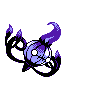
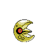

Guía para derrotar a HO-OH (10 Turnos)
Última Actualización: 22/11/2025, 11:41 a.m UTC-5 | Por SAMAM - Pokémmo
Con esta estrategia podrás derrotar a Ho-Oh (revancha) en solo 10 turnos, completando la run en aproximadamente 8 minutos y obteniendo cerca de 97k de ganancia si vendes los señuelos legendarios a 30k cada uno.
Ubicación y Ruta

Equipo Recomendado (PokePaste)
Chandelure - Nivel 100

Habilidad: Absor. Fuego
Naturaleza: Modesta
Iv's: 25 / - / 25 / 31 / 25 / 31
Ev's: - / - / 252 / 58 / 200 / -
Naturaleza: Modesta
Iv's: 25 / - / 25 / 31 / 25 / 31
Ev's: - / - / 252 / 58 / 200 / -
- Velo Sagrado
- Protección
- Más Psique
- Bola Sombra
Rotom (Horno) - Nivel 100

Habilidad: Levitación
Naturaleza: Mansa
Iv's: 25 / - / 25 / 31 / 25 / -
Ev's: 6 / - / - / 252 / 252 / -
Naturaleza: Mansa
Iv's: 25 / - / 25 / 31 / 25 / -
Ev's: 6 / - / - / 252 / 252 / -
- Maquinación
- Poder Oculto (Tierra)
- Rayo
- Pantalla de Luz
Lunatone - Nivel 100

Habilidad: Levitación
Naturaleza: Mansa
Iv's: 25 / - / 25 / 31 / 25 / 0
Ev's: 96 / - / 252 / 166 / - / -
Naturaleza: Mansa
Iv's: 25 / - / 25 / 31 / 25 / 0
Ev's: 96 / - / 252 / 166 / - / -
- Espacio Raro
- Protección
- Más Psique
- Joya de Luz
Objetos Clave y Builds

Estrategia de Combate Rotativa (10 Turnos)
| Turno | Chandelure |
Rotom
|
Lunatone |
|---|---|---|---|
| T1 | Velo Sagrado | Maquinación |
Protección |
| T2 | Protección | Maquinación |
Espacio Raro |
| T3 | Cambia - Lunatone | P. Oculto / Rayo (Suicune, Entei, Raikou) |
Más Psique (A Rotom) |
| T4 | Cambia - Lunatone | P. Oculto / Rayo (Suicune, Entei, Raikou) |
Joya de Luz |
| T5 | Cambia - Lunatone | Rayo |
Joya de Luz |
| T6 | Cambia - Lunatone | P. Oculto / Rayo (Suicune, Entei, Raikou) |
Joya de Luz |
| T7 | Cambia - Lunatone | Pantalla de Luz |
Espacio Raro |
| T8 | Más Psique (A Rotom) |
Maquinación |
Joya de Luz |
| T9 | Bola Sombra | Rayo |
Joya de Luz |
| T10 | Bola Sombra | Rayo |
- |
Método de Escape Rápido

¿Cómo salir si no tengo Vuelo?
Solo inicia un combate salvaje, cierra sesión por completo del juego y, al volver a entrar, aparecerás directamente curado en el último Centro Pokémon visitado.
Solo inicia un combate salvaje, cierra sesión por completo del juego y, al volver a entrar, aparecerás directamente curado en el último Centro Pokémon visitado.